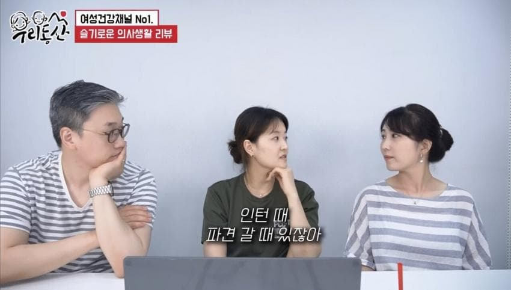
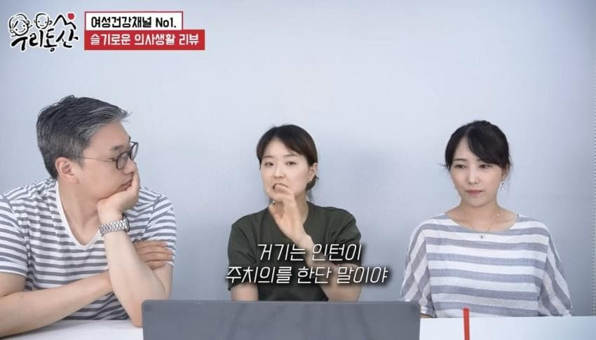
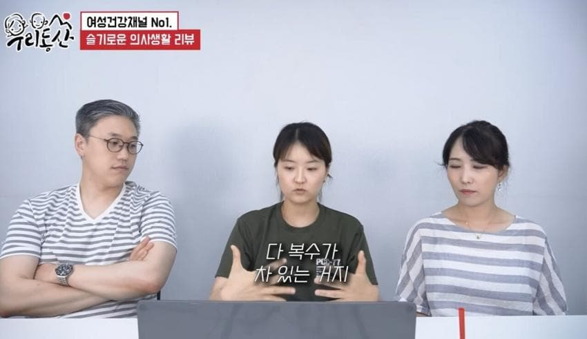
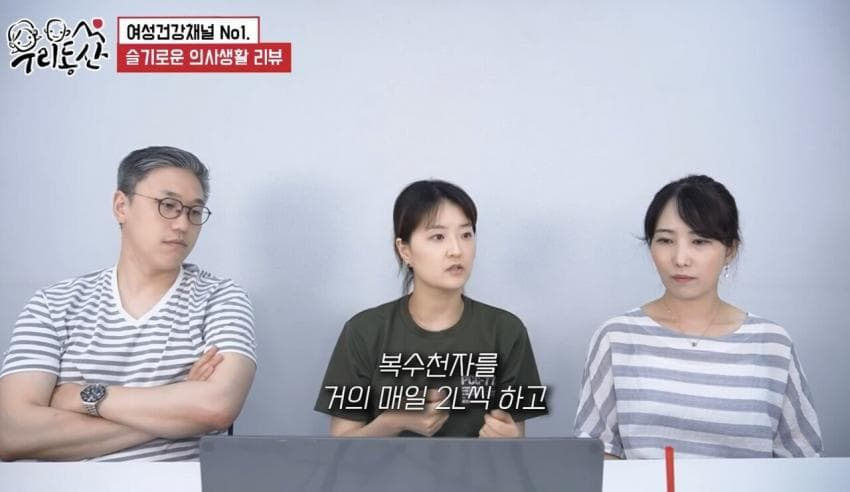
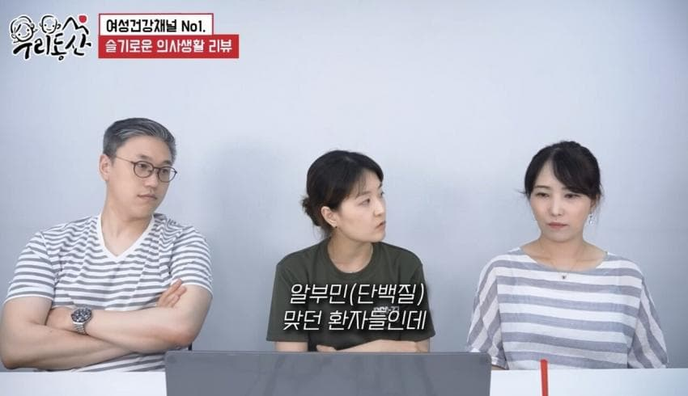
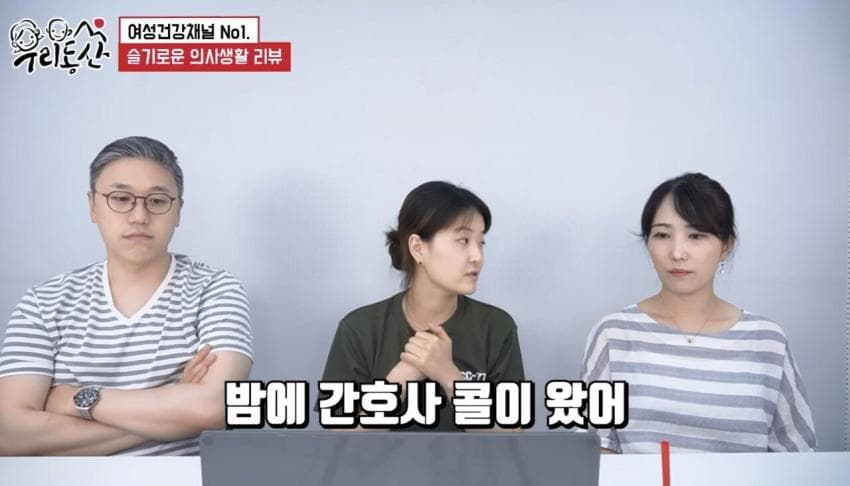
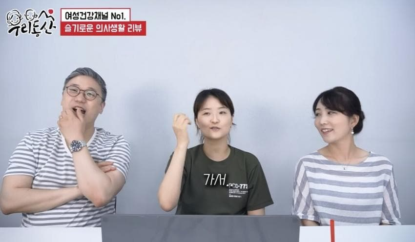
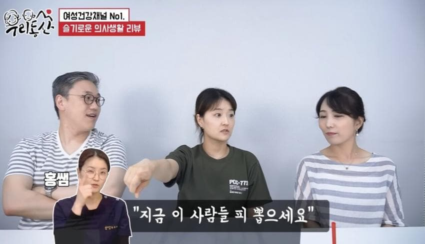
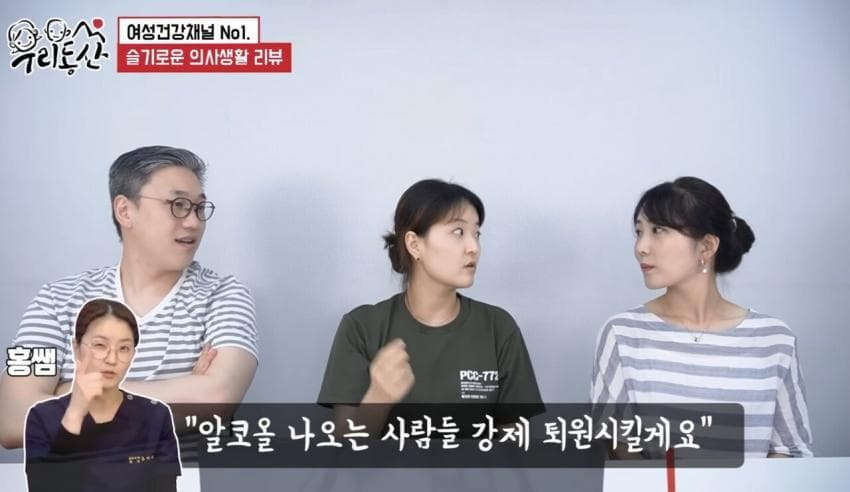
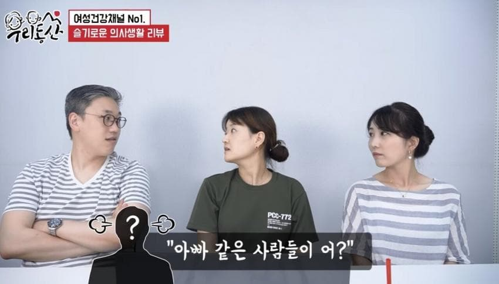
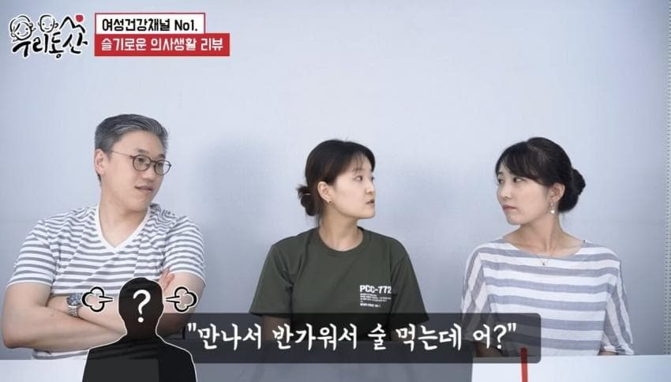
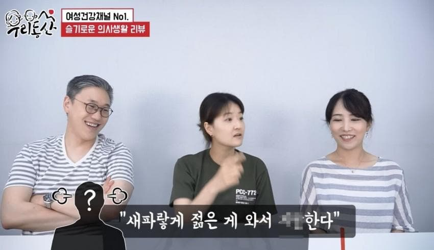
술때문에 간경화와서 복수가 차오르는 위험한 상황이라 절대 술 먹으면 안되는데 그런 위험한 상황을 인지도 못하고 또 사람들이랑 모여서 그것도 병원에서 같이 술 쳐먹음.
그래서 의사가 제재하는데도 만나서 반가워서 술 먹는다, 새파랗게 젊은게 와서 지랄한다는 이런 개소리들하고 있음

슬의생에 자식 간 뽑아먹고 또 술처먹어서 다시 병원오는 에피소드가 현실인거지